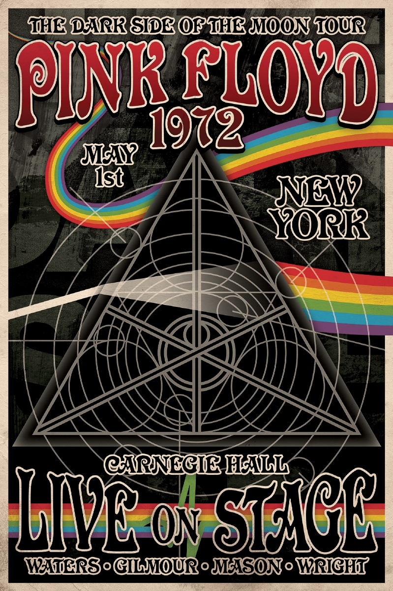
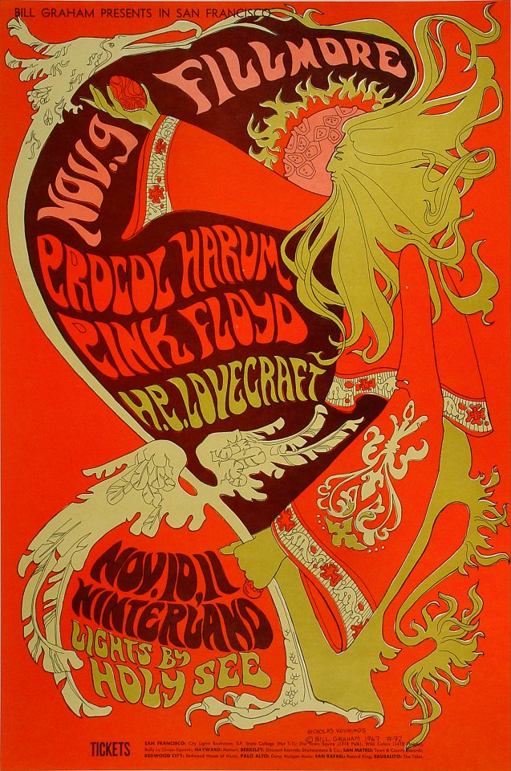
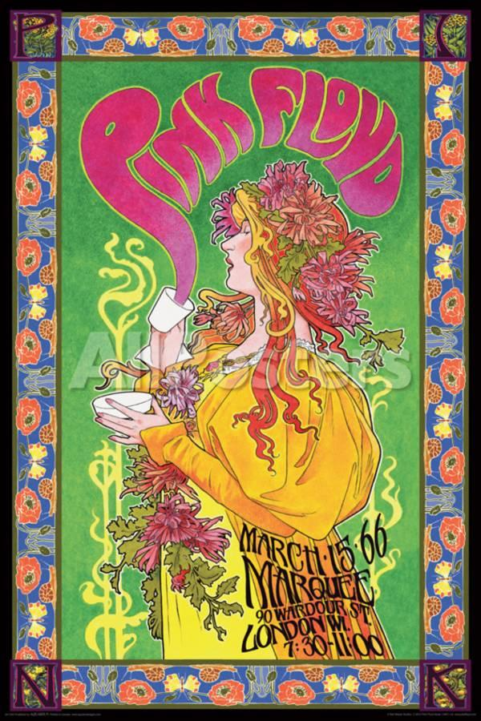

Upcoming Events

The Pink Floyd Exhibition: Their Mortal Remains, the critically acclaimed major retrospective of Pink Floyd,
one of the world's most pioneering and influential bands, today announced, via a press conference with Pink Floyd
founding member Nick Mason, that it will be opening at Rome's Museo d'Arte Contemporanea di Roma (MACRO) on 19 January 2018.
World Café features live performances and interviews with established artists, and they will be broadcasting David Gilmour's episode on
Wednesday 6th September as part of World Café Words and Music.

LIVE AT POMPEII ON TV: A 60-minute version of David Gilmour Live At Pompeii will be broadcast on BBC Two TV at 10.40pm on Saturday 18th November, and will feature solo material alongside Pink Floyd classics. UK residents will be able to watch the show on the BBC iPlayer for 30 days after transmission. The album release follows a one-off cinema showing in more than 2,500 cinemas around the world, which broke records for a music screening event, topping the box office in several countries, The album release follows a one-off cinema showing in more than 2,500 cinemas around the world, which broke records for a music screening event, topping the box office

DAVID GILMOUR 'LIVE AT POMPEII' RELEASED TODAY: Finally, the wait is over. Released today via Sony Music, David Gilmour's much-anticipated Live At Pompeii
album is available on 2-CD, Blu-ray, 2-DVD, 4-LP, deluxe Blu-ray box, and download. For more information, please click here. The Blu-ray and DVDs include
highlights from the concert performances of both of David Gilmour's Pompeii shows in July 2016, filmed in 4K by director Gavin Elder. The audio, available
on CD and LP, was mixed by Andy Jackson and David Gilmour, with Damon Iddins. The formats run to around 148 minutes each, with more than two additional
hours of material included in the deluxe 4-disc Blu-ray/CD set.